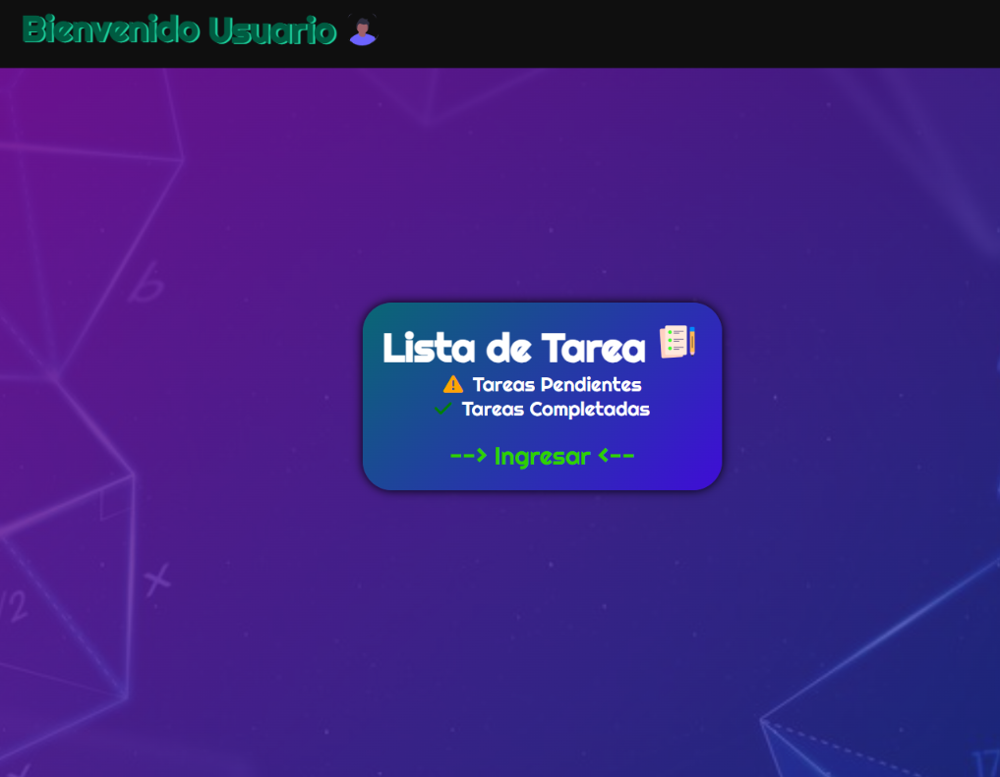
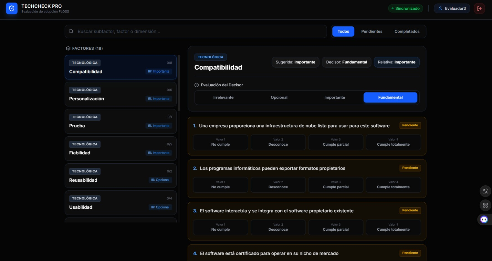
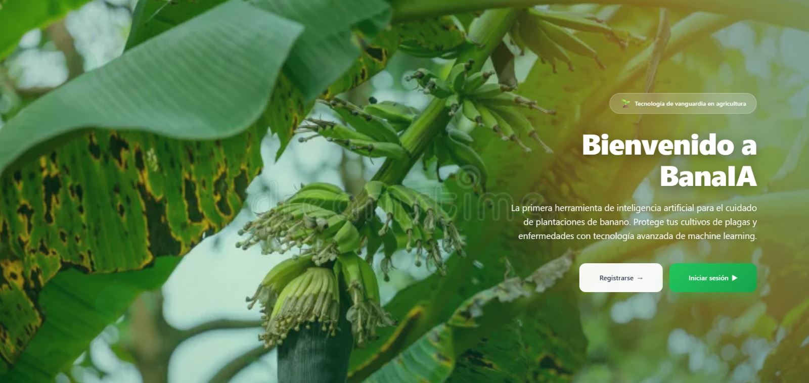

Aprendizaje constante
Cada proyecto es una excusa para sumar algo nuevo: de modelos CNN a marcos de gestión de TI.
Disponible para proyectos
Ingeniería en Software · UNEMI
Estudiante de Desarrollo de Software. Cada proyecto representa una oportunidad para adquirir experiencia, mejorar mis habilidades y prepararme para nuevos retos profesionales.
Soy estudiante de Ingeniería en Software y me interesa construir sistemas que se puedan medir, auditar y mejorar. Mis proyectos académicos combinan desarrollo, aprendizaje automático y procesos de calidad.
En equipo suelo asumir la coordinación: he actuado como Scrum Master en un proyecto final de cuatro integrantes, organizando sprints, documentación de QA y seguimiento de tareas.
Redes neuronales convolucionales (CNN) y transferencia de aprendizaje, desarrollo web con HTML5, CSS y JavaScript, y marcos de gestión de TI.
Proyectos donde pueda aportar en desarrollo, análisis de datos o aseguramiento de la calidad.
Qué me motiva
Por eso mis proyectos combinan desarrollo, datos y procesos: prefiero soluciones que se puedan medir y sustentar, no solo que funcionen.
Cada proyecto es una excusa para sumar algo nuevo: de modelos CNN a marcos de gestión de TI.
Me siento cómoda moviéndome entre desarrollo, datos e infraestructura de TI dentro del mismo proyecto.
Prefiero construir soluciones que respondan a una necesidad concreta antes que ejercicios sin propósito.
Agrupadas por área. El nivel refleja lo que he aplicado en proyectos académicos: Básico, Intermedio o En aprendizaje.
Estructura semántica y formularios accesibles.
Custom Properties, Flexbox, Grid y diseño responsive.
Manipulación del DOM, eventos y localStorage.
Planificación de sprints y rol de Scrum Master.
Documentación de QA/QC y diseño de casos de prueba.
Configuración de espacios, tareas y sprints.
Entrenamiento y experimentación con notebooks.
Control de versiones y repositorios de equipo.
Proyectos académicos donde combiné desarrollo, IA y gestión. Filtra por tecnología o abre el detalle de cada uno.

Aplicación para crear, organizar y marcar tareas como completadas, desarrollada como proyecto de la materia Técnica de Programación.

Sistema web para auditar la viabilidad tecnológica bajo el modelo TOE (Tecnología, Organización, Entorno). Es la reingeniería del prototipo GUIOSPRO FLOSS.

Proyecto enfocado en el uso de inteligencia artificial para apoyar el monitoreo del cultivo de banano. Busca analizar información del cultivo y contribuir a la detección temprana de enfermedades, generando recomendaciones que ayuden a mejorar el manejo y la productividad.
Decisiones visuales y componentes reutilizables de este portafolio. Los valores se leen en vivo desde las CSS Custom Properties: cambia el tema y se actualizan.
--color-primary--color-secondary--color-background--color-surface--color-text--color-text-muted--color-success--color-dangerFamilia principal:
Título h1
Título h2
Título h3
Párrafo base. Sirve para descripciones y contenido corrido con una longitud de línea cómoda.
Texto secundario para notas, metadatos y descripciones cortas.
Fuente mono:
--space-xs--space-sm--space-md--space-lg--space-xl--space-2xlEstado disponible
TechCheck Pro
Las organizaciones deciden adoptar tecnología sin un método estructurado ni evidencia comparable sobre su viabilidad.
Frontend
Html5-Estructura semántica y formularios accesibles
--radius-sm --radius-md --radius-lg --shadow-card¿Tienes un proyecto o una consulta? Escríbeme y te respondo.